Ghid din capturi locale
HORIBA Yumizen H500
Configurare LIS prin rețea pentru readerul WiseMED ASTM. Adresele IP din capturi sunt exemple și trebuie înlocuite cu IP-ul readerului din laborator.
ASTMTCP/IPPort 51501. Deschide configurarea LIS
- Autentifică-te cu utilizatorul tehnic și deschide Settings.
- În arbore: Results Settings → General → LIS Connection.
- Activează LIS Connection = Yes.
- Pentru acest reader selectează Network, nu RS232.
Capturile arată și pagina RS232. Ea este alternativă a aparatului; configurația WiseMED Yumizen H500 este TCP/IP.
2. Configurează rețeaua
- La Host Settings, completează Host IP cu adresa calculatorului pe care rulează readerul.
- Setează Port number = 5150, identic cu
modules.transport-tcpip.port. - În Analyzer Settings, folosește IP static, mască și gateway corespunzătoare rețelei locale.
- Salvează cu bifa verde și verifică Ethernet.
3. Trimite rezultate către LIS
- Deschide lista de rezultate și aplică filtrul dorit.
- Selectează rezultatele care trebuie expediate.
- Folosește acțiunea de print/transmit din ecranul Results.
- În dialog selectează opțiunea de trimitere a rezultatelor selectate și confirmă cu bifa verde.
Denumirea exactă a butonului poate diferi între versiuni de firmware; capturile arată dialogul cu opțiunile de tipărire și transmitere.
4. Capturi din aparat
{kind=link}
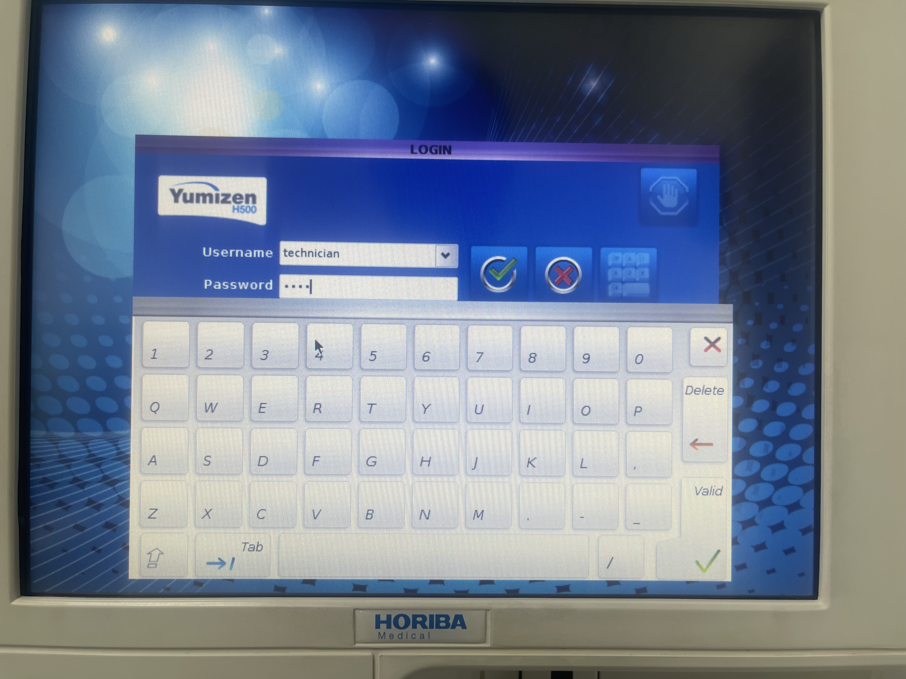
{kind=link}
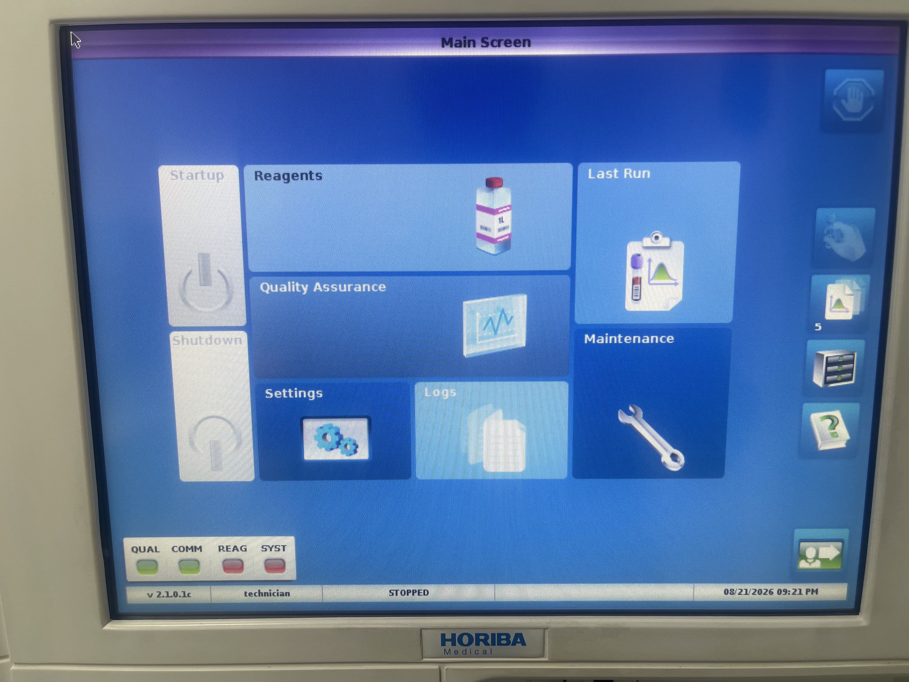
{kind=link}
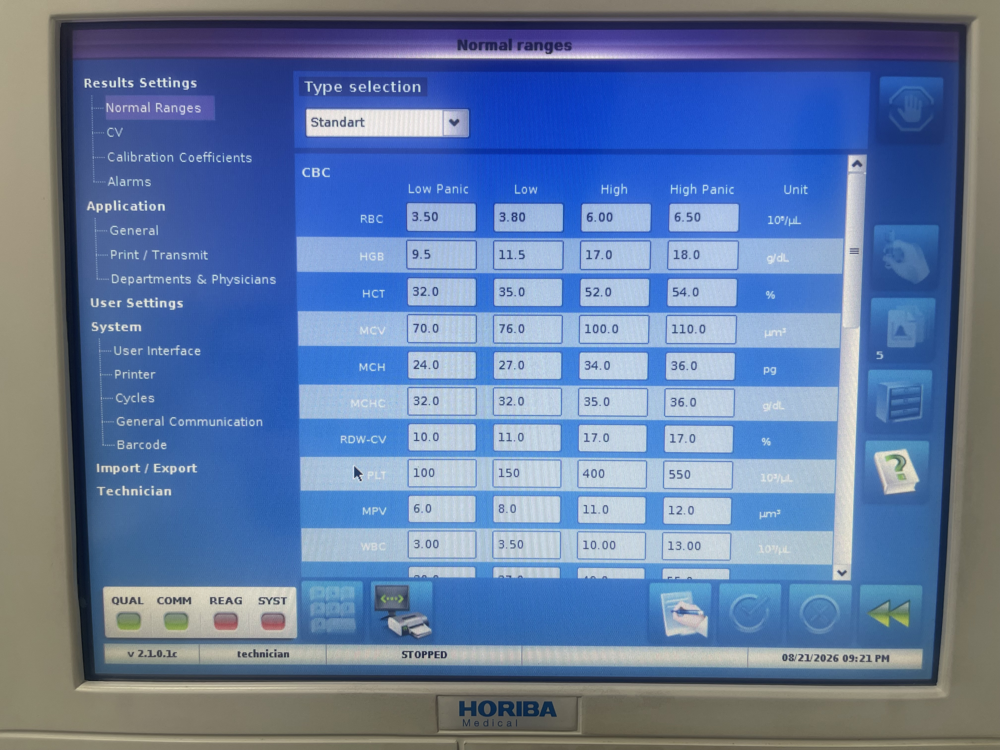
{kind=link}
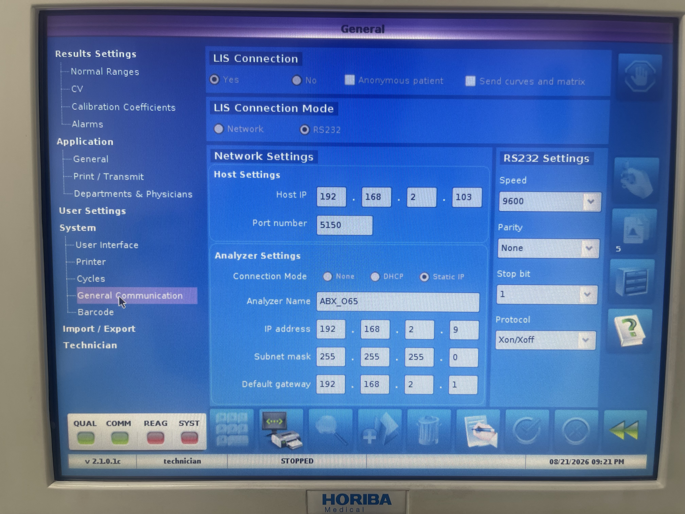
{kind=link}
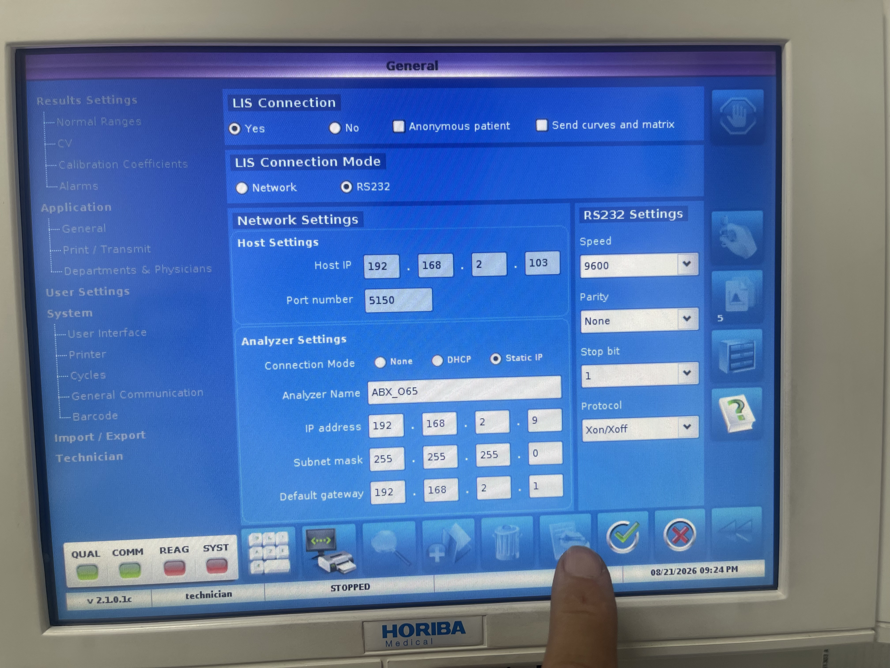
{kind=link}
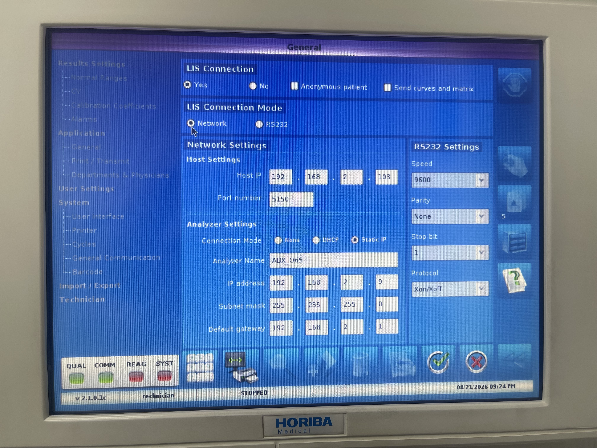
{kind=link}
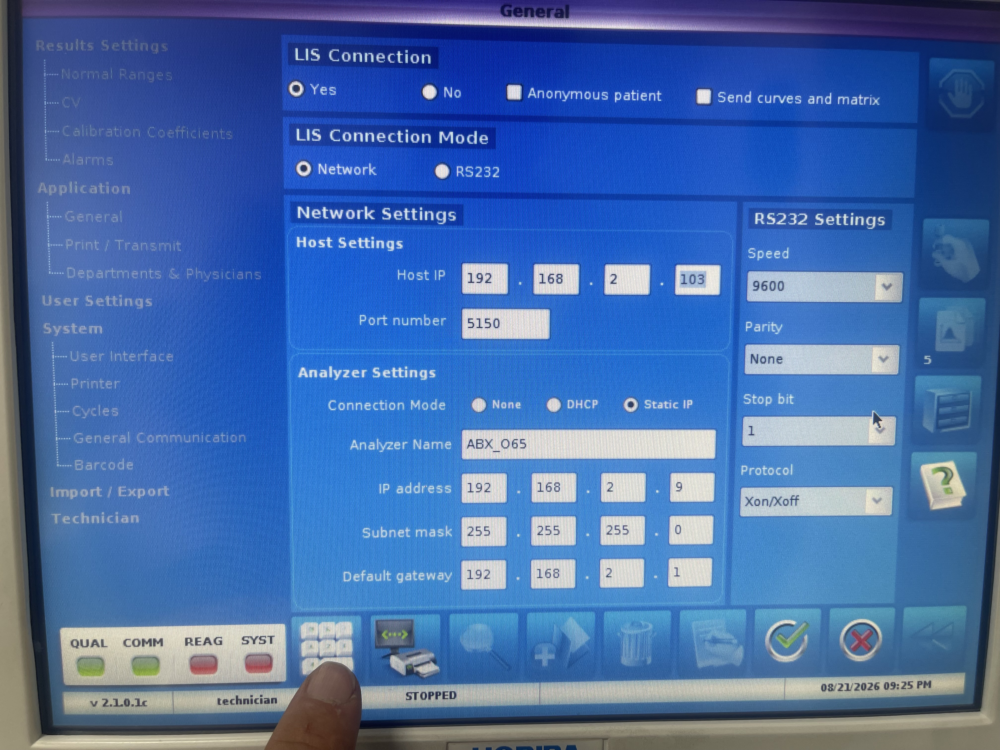
{kind=link}
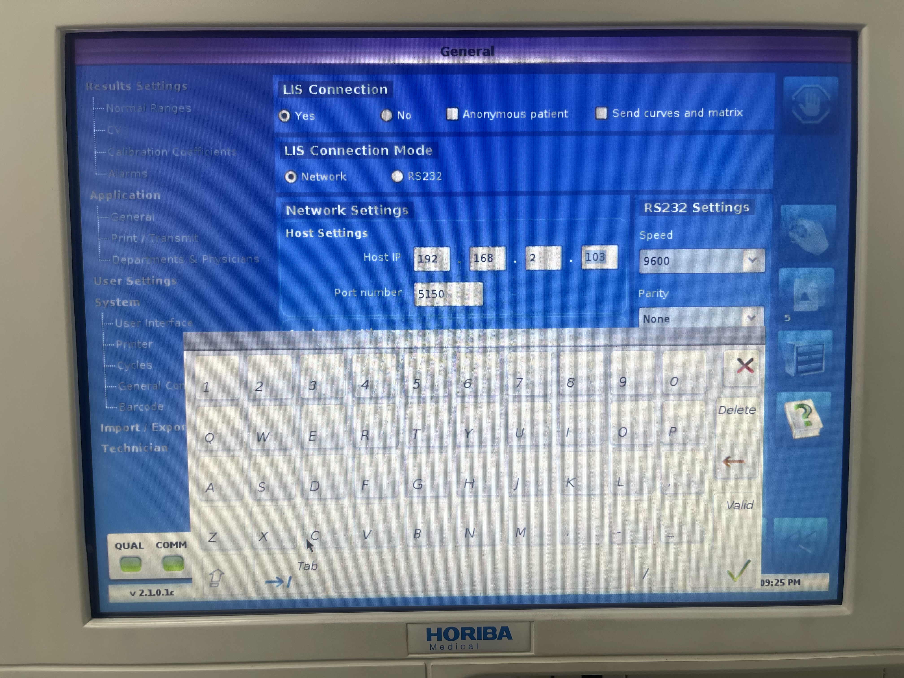
{kind=link}
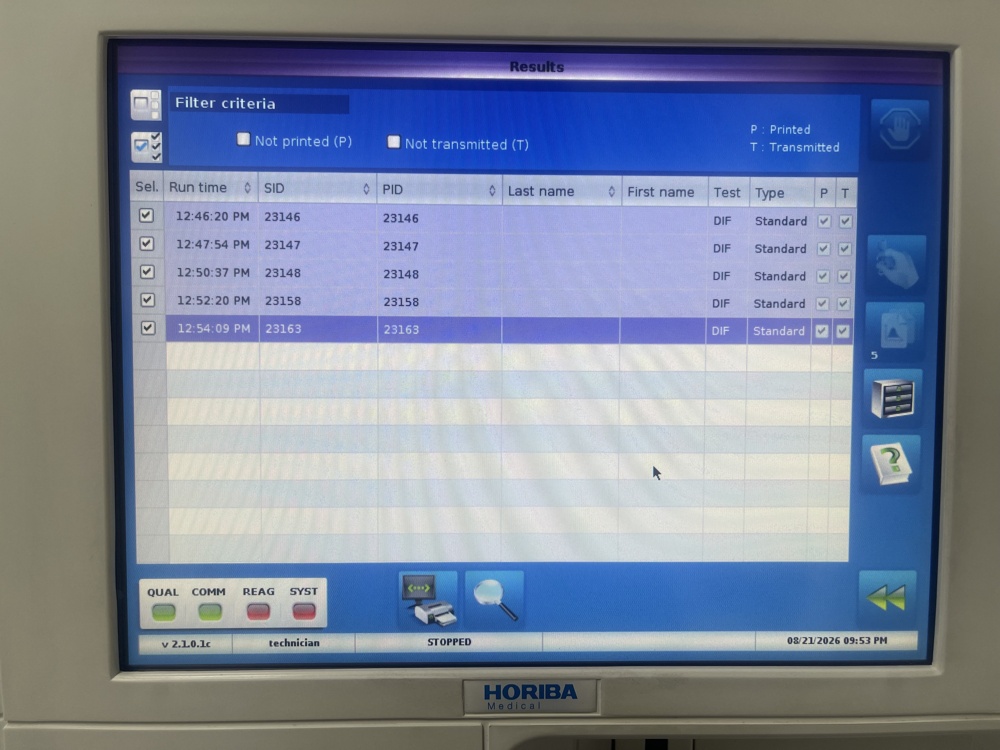
{kind=link}
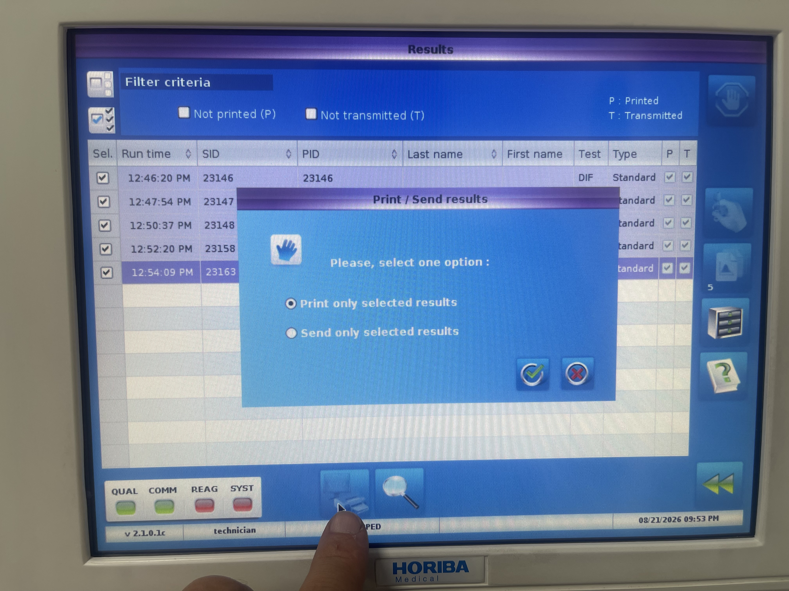
{kind=link}
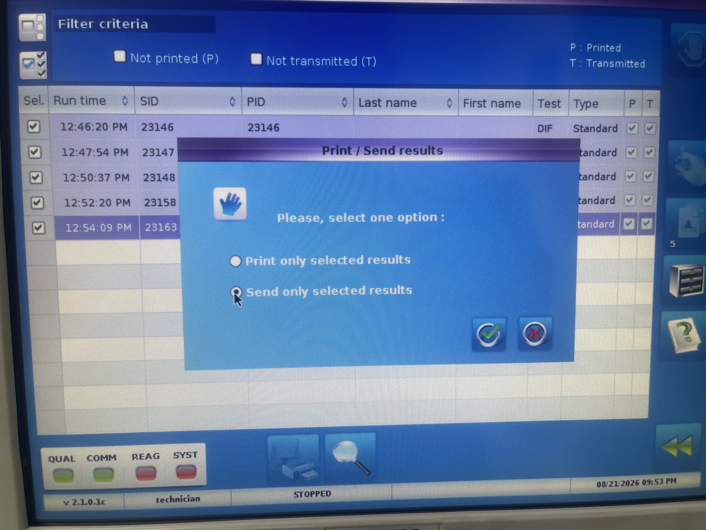
{kind=link}
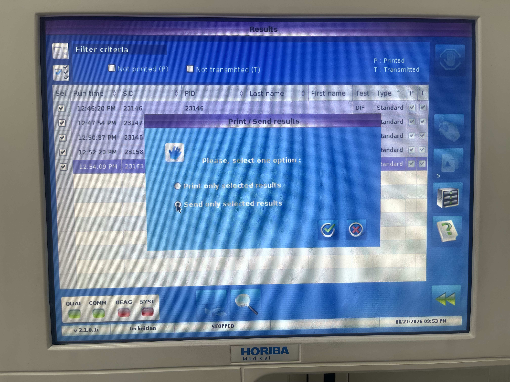